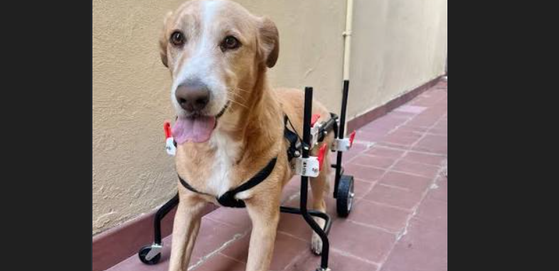

Verificado
Caso 1: Luna (Movilidad Reducida)
Luna es una perrita dulce, juguetona y muy valiente. Tiene movilidad reducida, pero con su carrito ortopédico vuelve a pasear y a jugar. Las donaciones ayudan a mantener el carrito y a pagar sus terapias de rehabilitación.
$600.000 de $2.000.000
30% recaudado